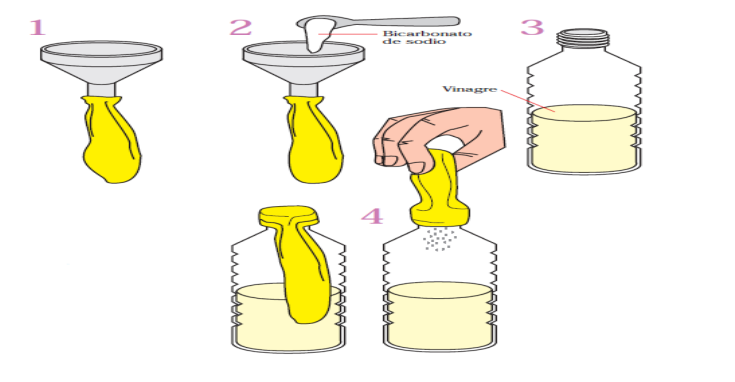

Prática 2: PRODUZINDO CARBONO
Materiais necessários:
Vinagre;
Bicarbonato de sódio;
Balão;
Funil;
Garrafa de gargalo estreito;
Procedimento:
1. Colocar vinagre dentro da garrafa de gargalo estreito até encher cerca de um quarto da garrafa;
2.Com o auxílio do funil, colocar no balão um pouco de bicarbonato de sódio;
3. Prenda a boca do balão no gargalo da garrafa. Levantar o balão de modo que o bicarbonato de sódio caia dentro da garrafa;
4. O vinagre começará a fazer bolhas e o balão começará a encher devagar. Isso acontece porque o ácido acético do vinagre reage com o bicarbonato de sódio liberando dióxido de carbono (Figura 2). À medida que se forma mais gás, a pressão dentro da garrafa aumenta e o balão enche.
